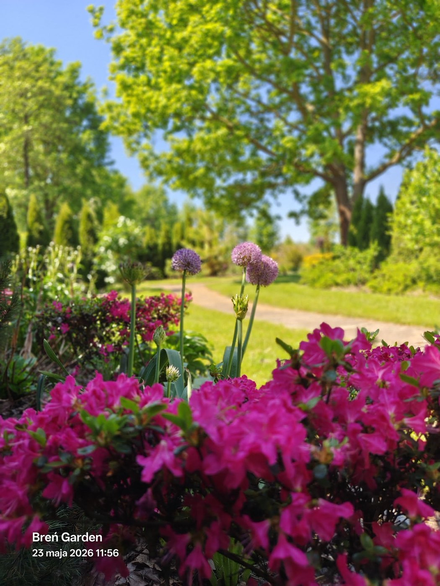
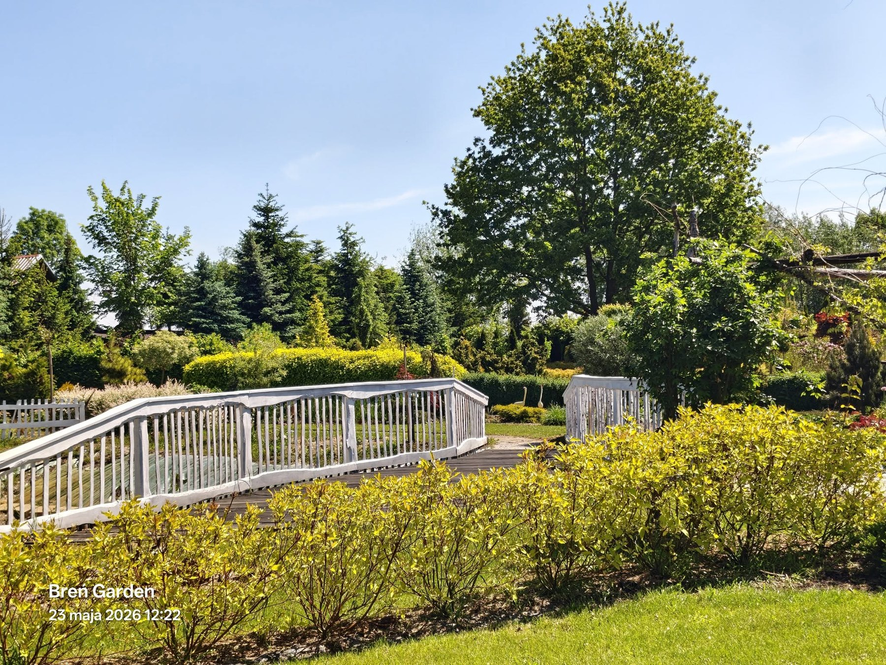

Sesje rodzinne
Luźne, ciepłe kadry w ogrodzie: spacer, ławka, mostek, zabawa dzieci, naturalne emocje bez sztywnego pozowania.
- rodzice z dziećmi
- sesje pokoleniowe
- pamiątka z wakacji lub weekendu
plener fotograficzny
Kwiaty, mostki, alejki, tipi, drzewa i miękka zieleń tworzą naturalne tła do zdjęć rodzinnych, komunijnych, ciążowych, ślubnych i dziecięcych.

Luźne, ciepłe kadry w ogrodzie: spacer, ławka, mostek, zabawa dzieci, naturalne emocje bez sztywnego pozowania.
Eleganckie zdjęcia w zieleni, bez zatłoczonych miejsc i bez przypadkowego tła. Ogród daje kilka różnych kadrów w jednym miejscu.
Mostki, alejki, kwiaty, drzewa i naturalny cień tworzą romantyczny, spokojny klimat do zdjęć narzeczeńskich i ślubnych.

dla fotografów
W Breń Garden można przejść z kwiatów na mostek, z mostku do tipi, z tipi w zieleń i na alejkę. To oszczędza czas sesji i pozwala zrobić cały materiał bez jeżdżenia po kilku lokalizacjach.
Zapytaj o zasady sesji